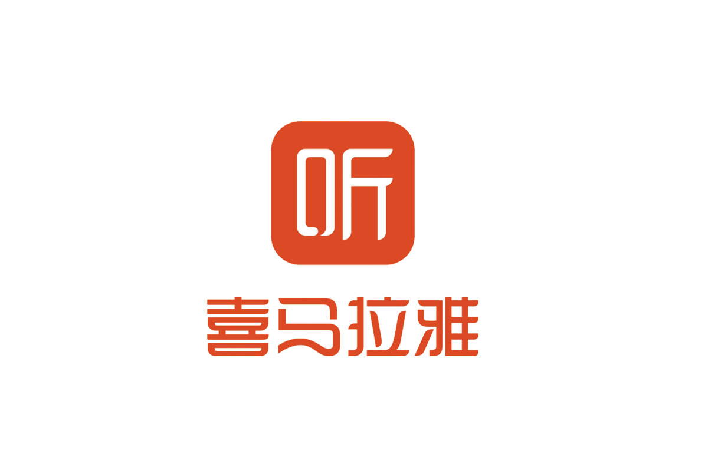
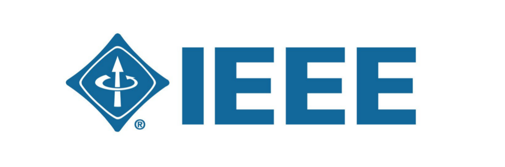

About Me
Yincheng Hou
A passionate electronic engineer with a focus on robotics and AI technologies. Currently pursuing an MSc in Robotics at King's College London, with experience in data analytics and cloud engineering.
Education
September 2024 – September 2025

King's College London
MSc Robotics, London, United Kingdom
Core Modules: Intelligence & Autonomy; Sensing & Perception; Robot Kinematics & Motion Planning
Key Awards: President's Global Leadership Award
June 2024 – July 2024
University of Lisbon
Exchange Program, Lisbon, Portugal
September 2020 – June 2024

Shanghai University
BE Electronic Information Engineering, Shanghai, China
Core Modules: Data Structure & Algorithm; Analog & Digital Circuits; Signals & Systems; Telecom Theory
Key Awards: Outstanding Student Leader; Outstanding Student; Innovation & Entrepreneurship Scholarship
July 2019 – August 2019
Penleigh and Essendon Grammar School
Exchange Program, Melbourne, Australia
September 2017 – June 2020
Shanghai Datong High School
Senior High School, Shanghai, China
Professional Experience
May 2025 – June 2025
Cloud Business Engineer Intern
China Telecom Europe, London, United Kingdom
- Evaluated client capacity requirements and recommended optimal instance types and storage configurations, to ensure business isolation and high availability. Directly driving the client to sign a service agreement.
- Deployed on-prem open-sourced LLMs (Ollama, Deepseck) on an ECS instance. Configured Redis caching and SQLite databases, and integrated Open WebUI front-end APIs to prototype chatbot cloud AI products.
- Architeched an industry-specific knowledge base, performed data cleaning and chunking engineering, and orchestrated Dify and Alibaba Cloud Bailian workflows with the Mobi low-code platform to launch a RAG chatbot in a test environment. Delivered a report demonstrating segmented performance gains over general-purpose models.
September 2023 – December 2023

Data Analytics Intern
Shanghai Himalaya Technology Co., Ltd., Shanghai, China
- Implemented Beautiful Soup to parse front-end HTML and HTTP headers, simulating browser header information to gain authorized access to the site. Utilised Excel pivot charts for data processing, including line and pie charts.
- Developed a competitor cooperation analysis dashboard using MySQL queries in XQL and the Unicorn platform. Regularly collaborated with the business team to provide data support for decision-making.
- Utilised Panda scheduling to build Hive tables for automation. Created visualised dashboards using QuickBI and Tableau to monitor the company's full-volume data across key indicators; provided operational strategy suggestions.
Projects and Publications

An End-to-End Convolutional Neural Network Model for Autonomous Driving
December 2022 – April 2023
- Utilised scikit-learn in Python to divide a JSON dataset, perform image enhancement, and normalize data; leveraged NumPy and Pandas for data processing and cleaning.
- Simulated car behavior in Unity and constructed a classification model by extracting features through CNN using TensorFlow and Keras neural network models. Experienced in data visualization with Matplotlib and Seaborn.
- Simplified model with selected regularization methods and early stopping to solve overfitting. Tuned the model to improve key metrics by 9% over the existing model on unseen test sets.
Model and Algorithm for Shredded Paper Recovery
July 2021 – Sept. 2021
- Leveraged Image Processing Toolbox in MATLAB to convert between the pixel value matrix of the image and the visualisation results. Implemented the correlation scoring algorithm.
- Used Python's Pandas and NumPy libraries to process pixel grayscale values and design a scoring algorithm, led to a 20% improvement in accuracy. Secured second place in Shanghai National Maths Modeling competition.